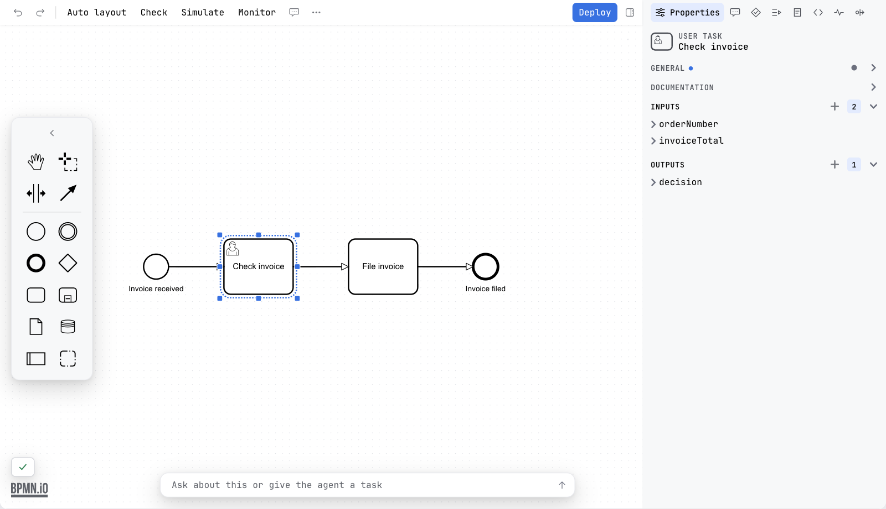

Engine profiles
A project targets one of three engines: Classic BPMN 2.0, Camunda 7 or Camunda 8. The choice decides which modeler is built, which groups the properties panel shows, and which namespace the editor is able to write into the diagram.
Choosing a profile
The engine is engine in penstock.yaml: one of
classic, camunda-7 or camunda-8. The file nearest the
diagram wins, so a folder can have an engine of its own; see
Configuration. When no file sets it, the diagram decides: the
execution platform the Camunda Modeler records in it, or the zeebe: or
camunda: attributes it already carries.
A diagram opens straight away either way. Only an empty new diagram, which names no engine,
asks: one line above the canvas, Which engine runs this diagram?, with a button for
Camunda 8, Camunda 7 and Plain BPMN. The answer goes into penstock.yaml. Changing
the engine takes effect when the diagram editor is reloaded, because the modeler is constructed
from it.
What each profile builds
Classic BPMN 2.0
Classic uses the plain bpmn-js modeler with the standard properties panel and
the standard BPMN properties provider, and it registers no Camunda moddle extension at all.
Because no extension is registered, this profile cannot write camunda: or
zeebe: attributes: there is nothing in the model that knows those types exist. The
panel shows the groups the BPMN provider defines — General, Documentation, and the
element-specific ones such as Message, Signal, Error, Escalation, Link, Timer, Compensation,
Multi-instance and Ad-hoc completion.
The engine question offers this profile as Plain BPMN.
Camunda 7
Camunda 7 uses the Camunda Platform modeler from camunda-bpmn-js. That modeler
registers the camunda moddle extension and adds the Camunda Platform properties
provider and the element-templates properties provider on top of the standard BPMN groups, so
the panel gains the execution groups — among them Script, Condition, Execution listeners, Task
listeners, Inputs and Outputs.
Penstock loads two more modules into this profile. One is the element-template create and
append module, which the Camunda Platform modeler does not carry on its own, fed by the same
template files as Camunda 8. The other is a properties
provider of Penstock's own: script, condition, listener and input/output entries that hold an
inline script are replaced with a CodeMirror field with Groovy or JavaScript highlighting, and
that field can be opened as a real file in the IDE; while
the file is open the field in the panel is read-only and the two stay in step. When
scriptType is set in penstock.yaml, it is used as the
scriptFormat of a script that does not have one yet, and as the
language of a condition expression that does not have one yet. It applies to this
profile only.
Camunda 8
Camunda 8 uses the Camunda Cloud modeler from camunda-bpmn-js. It registers the
zeebe moddle extension and adds, among others, the Zeebe properties provider, the
cloud element-templates provider and the example data provider, and it points the panel's FEEL
popup at the Camunda documentation for FEEL and for templating syntax. This modeler already
carries both create and append modules, so a new element can be started from an element template
or from the full element list.
The connector template browser, Templates… in the editor's More menu, appears only for this profile.
What reaches the XML
| Classic BPMN 2.0 | BPMN 2.0 only. No engine namespace is registered, so none can be written. |
| Camunda 7 | camunda, bound to http://camunda.org/schema/1.0/bpmn. |
| Camunda 8 | zeebe, bound to http://camunda.org/schema/zeebe/1.0. |
So a service task configured under Camunda 7 carries attributes and extension elements such
as camunda:asyncBefore or camunda:executionListener, and the same task
configured under Camunda 8 carries zeebe:taskDefinition or
zeebe:ioMapping. An element created from an element template records the template
it came from in the same namespace — camunda:modelerTemplate under Camunda 7,
zeebe:modelerTemplate under Camunda 8.
Nothing rewrites a diagram on open. If you switch a project from Camunda 7 to Classic, the
camunda: content already in the file is left alone; the editor no longer has a
panel for it, and the model no longer recognises those types.
What else the profile changes
| Deploy | Toolbar, Camunda 7 and Camunda 8 only. It sends to the Camunda 7 REST API or the Camunda 8 REST API, chosen from the profile. |
| Templates… | The More menu, Camunda 8 only. |
| Element templates | Read under Camunda 7 and Camunda 8; the Classic editor has no template support. |
scriptType | penstock.yaml, Camunda 7 only. |
| bpmnlint | All three profiles, without setup. |
| Auto layout, Check, minimap, token simulation, task resizing, image export | All three profiles. |
Input and output in Classic
Classic writes data inputs and outputs the way BPMN defines them, not the way an engine
extends it. Select a task, a sub-process or the process itself and the panel offers an
Inputs and an Outputs group; adding an entry writes a
bpmn:ioSpecification with a bpmn:dataInput or
bpmn:dataOutput inside it, and a reference from the input or output set:
<bpmn:serviceTask id="Task_check" name="Check stock">
<bpmn:ioSpecification>
<bpmn:dataInput id="DataInput_1" name="quantity" />
<bpmn:inputSet id="InputSet_1" name="Inputs">
<bpmn:dataInputRefs>DataInput_1</bpmn:dataInputRefs>
</bpmn:inputSet>
<bpmn:outputSet id="OutputSet_1" name="Outputs" />
</bpmn:ioSpecification>
</bpmn:serviceTask>
Removing the last input and the last output removes the specification with them, so a file
never carries an empty one. The groups are registered only in the Classic profile: Camunda 7
and Camunda 8 keep their own input and output editors, which write
camunda:inputOutput and zeebe:ioMapping, because that is what those
engines read.
Known limitations
The engine is set per folder, not per file: a penstock.yaml that sets
engine applies to every diagram under its folder. The diagram's own attributes are
read only where no file sets it.